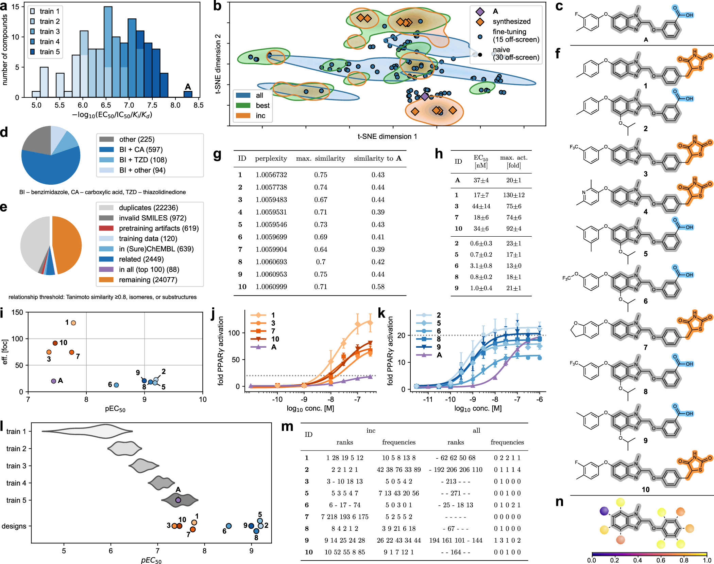
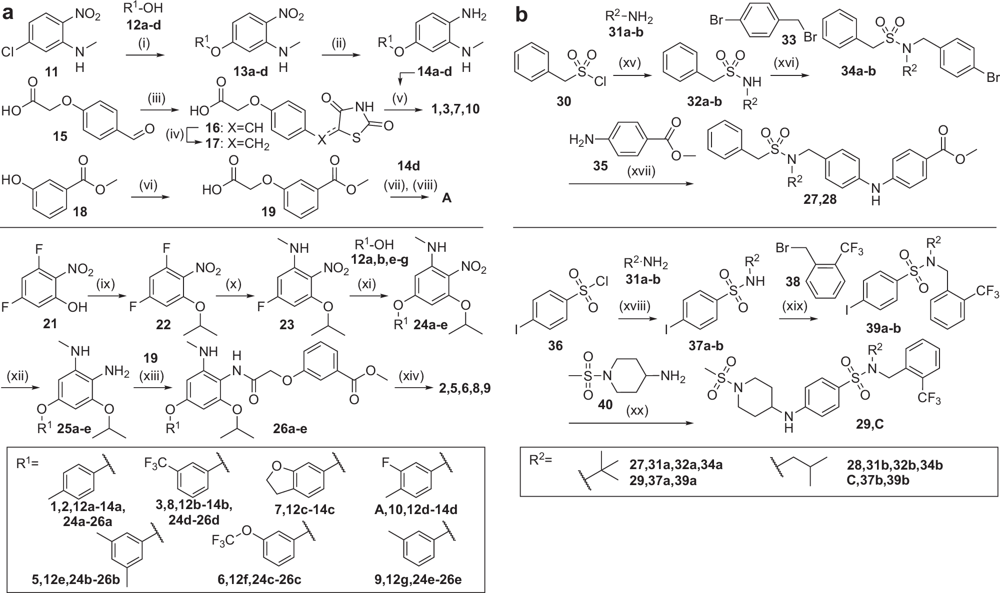
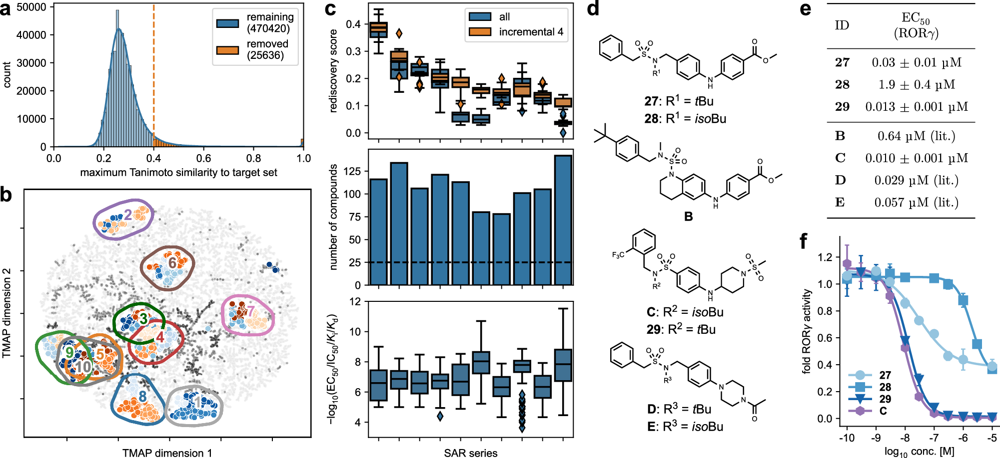
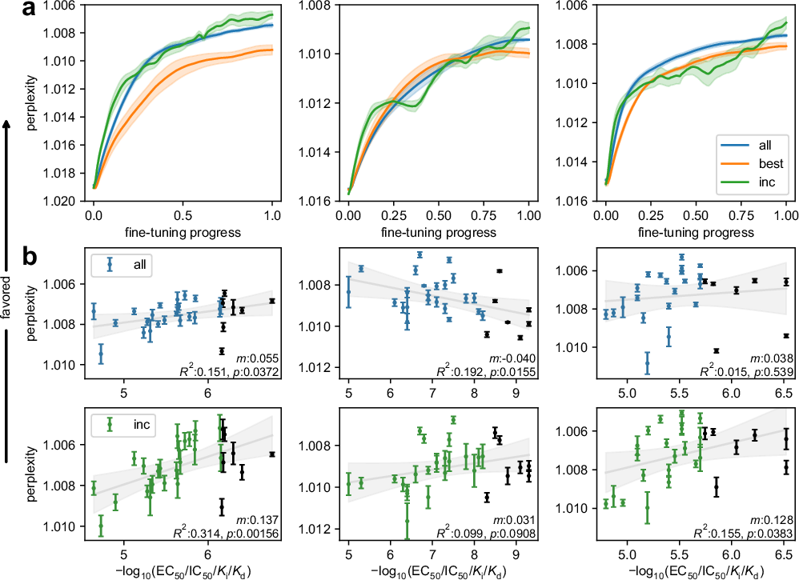

摘要解读
利用增量训练语言模型优化药物分子结构
Structural optimization of drug molecules with incrementally trained language models
解读更新 2026-09-25 10:27 · 依据公开摘要整理，未核验全文细节
Nat Commun | 慕尼黑大学：增量式语言模型实现药物结构优化
智药邦 · 2026-05-11
Nat. Commun. | 让分子“越学越会设计”：渐进式语言模型驱动的药物结构优化
DrugAI · 2026-04-14
摘要解读已完成，图文文章正在升级。以下保留现有摘要笔记，尚未按图文稿逐项复核。
本文研究如何用化学语言模型自动优化药物分子的靶向效力。作者模拟药物发现中的学习过程，以同一构效关系系列内效力逐渐提高的模板分子增量微调模型，引导其生成高活性类似物。摘要称，前瞻性配体开发获得了效力超过相应化学类型已知代表的分子，且不依赖外部评分。[摘要] 本文适合作为生成式设计的方法参考，但现有资料未提供具体效力数值、实验细节或比较结果；以下仅为摘要级解读。
研究问题
研究问题是如何借助机器学习自动优化药物分子结构，提高针对目标靶点的效力。摘要将其称为“an open challenge in chemistry”。[摘要] 解读：这里的优化对象是分子及其靶向活性，而不是宏观工程结构，也不能把效力提高等同于整体成药性改善。
方法与路线
作者建立模拟药物发现项目学习轨迹的训练策略：从给定构效关系系列中选取效力逐渐提高的模板分子，对化学语言模型进行增量微调，再生成类似物。[摘要] 解读：关键在于训练信息随效力递进；摘要未交代模型架构、各轮样本规模和微调参数。
创新与比较
摘要中可辨识的方法特色，是将构效关系系列的效力递进组织为增量学习过程，并报告候选设计“without external scoring”。[摘要] 解读：这提示模型可通过训练吸收优化方向，而不必依赖外部评分引导生成；但摘要不足以支持首创性或相对既有方法的全面优势判断。
证据与发现
作者报告，前瞻性配体开发设计出了效力超过相应生物活性化学类型已知代表的分子，并据此认为模型能够捕捉构效关系模式及长程依赖。[摘要] 这些是作者陈述的成果，但摘要没有给出提升幅度、候选数量或统计信息，尚无法评价效应大小与结果稳定性。
局限与边界
现有证据限于摘要，未提供靶点范围、实验检测条件、训练测试划分及对照设计，因此不能核查泛化能力或排除数据重叠影响。[摘要] 解读：这些属于当前资料的证据边界，不是已证实的论文缺陷；毒性、选择性与药代性质是否改善也无从判断。
方向关联
解读：按所给生成式设计标签，论文与研究方向直接相关，其可迁移启发是用性能递进样本塑造生成模型的设计偏好。[摘要] 对智能运维、工程结构设计和可靠性研究而言，这只是方法层面的潜在联系；摘要没有涉及故障预测、力学约束或可靠性指标，不能主张已有应用验证。
后续研究建议
建议：后续获取全文时，优先核查递进模板的选择规则、训练数据与验证对象的关系，以及前瞻性实验和基线比较。若考虑迁移至工程设计，建议比较递进训练与随机排序训练，并独立验证约束满足率和可靠性；这些是研究建议，而非作者已完成的工作。[解读]
阅读建议
推荐从生成式设计与递进训练策略角度重点阅读：其明确展示了利用构效关系序列引导候选生成的路径，并报告前瞻性应用成果；但不能据此认定其已适用于工程结构优化。[摘要][解读]
原图未改动。以下图注来自标注的来源，不据此补写摘要未报告的实验结论。
已取得的论文原图

原文图注与出处
a A PPARγ ignorant CLM was developed using molecules from ChEMBL32 (bioactivity on any target ≤ 1 µM) excluding molecules with annotated activity on PPARs and molecules with Tanimoto similarity >0.4 (Morgan fingerprints, radius=2, 2048-bit). b Distribution of pretraining molecules with respect to activity on PPARs and related targets before (left) and after (right) activity-/similarity-based filtering. c TMAP 45 embedding of known PPARγ ligands revealed 27 SAR series (one color each). Background: 45k random ChEMBL molecules (5k shown). Characteristics of the 27 PPARγ agonist SAR series: number of molecules ( d ), potency distribution ( e ), internal pairwise Tanimoto similarity distribution ( f ). g Rediscovery score to evaluate CLM performance in structural optimization. h Fraction of rediscovered highly active ligands from the holdout set in the top-ranking designs retrieved by classical (all) or incremental CLM fine-tuning ( n = 135; lines: mean, shades: SEM). i Rediscovery scores achieved by classical (all) and incremental fine-tuning for the 27 PPARγ agonist SAR series datasets ( n = 25, five fine-tuning iterations with five sampling runs each). j Effects of different dataset splits on the rediscovery score. The difference (Δ) in the rediscovery score to classical fine-tuning is shown. k Effects of data augmentation (×10) and epoch-wise SMILES randomization on the rediscovery score relative to the canonical model. l Tanimoto similarity (Morgan fingerprints 46 ) of the top-100 designs ( n = 100) by perplexity obtained from CLMs fine-tuned with all template molecules per SAR series (all), only the most active subset (best), or the incremental approach at the different steps, to the holdout set containing the most active compounds of each series. m Effect of incremental fine-tuning on design distribution visualized by t-distributed stochastic neighbor embedding (t-SNE) for one exemplative SAR series (regions were defined by the top-100 designs (perplexity) for each training step; background: 10k random ChEMBL molecules). Boxplots in e , f , i , l show median and interquartile range (IQR), whiskers extend to the most extreme points within 1.5 × IQR. Data in h , j , k from five fine-tuning iterations over 27 datasets ( n = 135); black lines: mean Δ rediscovery score; shades: 95% CI derived from bootstrapping. Source data are provided as a Source Data file.
Hörmann, Tim et al.
原文图页 · CC BY 4.0

原文图注与出处
a Potency distribution of benzimidazole-based PPARγ agonists used for fine-tuning. Different colors represent the fine-tuning steps with increasing potency. b t-Distributed stochastic neighbor embedding (t-SNE; Morgan fingerprints 46 ) of the top-30 designs by perplexity (regions) from a naïve CLM, after fine-tuning with all templates (all), only the most active templates (best), or the incremental approach (background: 10k random ChEMBL molecules). c Most active PPARγ agonist A of the fine-tuning series 48 . d Chemotype distribution of CLM designs (top-1024 valid and unique, by perplexity) after incremental fine-tuning. e Distribution of de novo designs (from five independent incremental fine-tuning iterations sampling 10k designs each) with respect to invalid SMILES, known and related (Tanimoto similarity ≥0.8, Morgan fingerprints, radius=3, 2048-bit; isomers; substructures) molecules, and designs also frequently sampled after classical fine-tuning (all). f Top-10 designs ( 1 - 10 ) by perplexity (after filtering ( e )) from the incrementally fine-tuned CLM. g Perplexity and Tanimoto similarity of the top-10 designs to the most similar training molecule (cf. Supplementary Table 2 ) and the most active known agonist A . h , i Potency and efficacy of 1 - 3, 5 - 10 and A on PPARγ. Dose-response curves of 1, 3, 7, 10 and A ( j ) and 2, 5, 6, 8, 9, 10 and A ( k ) in a PPARγ hybrid reporter gene assay. The dotted line shows the maximum eff. of A . Data in h – k are the mean ± SEM; n = 3 (three independent repeats in duplicates). l Potency distribution of the fine-tuning molecules 48 , 49 , 50 , 84 (train 1-5) and the CLM designs 1 - 3 and 5 - 10 . Retesting the most active fine-tuning entity A in the same setting as 1 - 3 and 5 - 10 revealed slightly lower potency than reported in literature. m Ranks (perplexity) and sampling frequencies of the designs 1 - 3 and 5 - 10 for incrementally fine-tuned CLMs (inc) and for CLMs trained with all template molecules in one go (all). Data from five independent fine-tuning and sampling procedures (10k designs each). n Scope of PPARγ agonist scaffold modifications designed by the incrementally fine-tuned CLM (darker colors represent higher diversity). Source data are provided as a Source Data file.
Hörmann, Tim et al.
原文图页 · CC BY 4.0

原文图注与出处
a Synthesis of PPARγ agonists designs 1 - 3 and 5 - 10 , and the most potent agonist A from the training data; reagents and conditions: (i) NaH, DMF, 90 °C, 3 h, 79–93%; (ii) iron powder, conc. HCl, MeOH/H 2 O (9:1), 90 °C, 2 h, 13–16%, or iron(III)acetylacetonate, hydrazine hydrate, DMF, 80 °C, o. n., 20–33%; (iii) thiazolidine-2,4-dione, KOH, EtOH, rt, o.n., 99%, (iv) CoCl 2 -DMG complex, NaBH 4 , NaOH, H 2 O/MeOH (3:1), 35 °C, 3 h, 40%; (v) 14a-d, 17 , DIPEA/HATU, DMF, 3 h, r.t., then 3 h, 90 °C, 10–19%; (vi) tert -butyl bromoacetate, K 2 CO 3 , DMF, rt, o.n., then TFA/CH 2 Cl 2 (1:1), anisole, rt, 3 d, 43%; (vii) 14d , DIPEA/HATU, DMF, 3 h, r.t. and 3 h, 90 °C, 17%; (viii) NaOH/1.4-dioxane (2:1), 2 h, 80 °C; quant.; (ix) isopropanol, PPh 3 , DBAD, THF, 0 °C, 1 h, then rt, o.n., 74%; (x) MeNH 2 , THF, 40 °C, o.n., 99%; (xi) NaH, DMF, 80 °C, o.n., 35–96%; (xii) Fe, NH 4 Cl, EtOH/H 2 O, 80 °C, o.n.; (xiii) TCFH, NMI, MeCN, 0 °C, 1 h, then r.t., o.n., 7–72% over 2 steps; (xiv) 1 N HCl in 1,4-dioxane, 80 °C, o.n., then NaOH(aq), 80 °C, 2 h, 48–97%. b Synthesis of RORγ ligand designs 27 - 29 , and the most potent and the most active entity C from the training data; reagents and conditions: (xv) NEt 3 or DIPEA, CH 2 Cl 2 , 0 °C, 2–21 h, 16–63%; (xvi) NaH, N , N -dimethylacetamide, r.t. to 80 °C, 16 h, 29–73%; (xvii) Pd 2 (dba) 3 , XPhos, Cs 2 CO 3 , toluene, 115 °C, 21 h, 39-65%. (xviii) TEA, CH 2 Cl 2 , rt, 16 h, 47–70%; (xix) NaH, DMSO, rt, 1 h, 67–91%; (xx) NaOtBu, XPhos Pd G3, 1,4-dioxane, 80 °C, 2 h, 18-25%.
Hörmann, Tim et al.
原文图页 · CC BY 4.0

原文图注与出处
a A CLM ignorant of ROR ligands was developed using molecules from ChEMBL32 from which all known ROR ligands as well as all molecules with Tanimoto similarity >0.4 (Morgan fingerprints, radius = 2, 2048-bit) to a known ROR ligand were removed. b Known RORγ ligands were clustered using TMAP 45 embedding to identify related chemotypes (ten in total, each represented by one color). The background chemical space was calculated using 10k random ChEMBL molecules. c Rediscovery score from retrospective evaluation ( n = 25, five fine-tuning iterations with five sampling runs each), number of contained molecules, and potency distribution of the ten inverse RORγ agonist chemotype datasets ( n = number of molecules in respective dataset). Box plots display median and IQR, with whiskers extending to extreme values within 1.5 × IQR; d Chemical structures of designs 27 and 28 from a CLM incrementally fine-tuned with a cluster of inverse RORγ agonists 58 , 59 , 60 , 61 (Supplementary Table 3 ), the most similar ( B 58 ) and most potent ( C 61 ) inverse RORγ agonists from the corresponding fine-tuning data, the (human-designed) analog 29 of C , the only N - tert -butylsulfonamide D in the training data and its N - sec -butyl equivalent E . The most similar fine-tuning molecules to 27 - 29 are shown in Supplementary Table 4 . Potency, efficacy ( e ) and dose-response curves ( f ) of 27 - 29 and C in a Gal4-RORγ hybrid reporter gene assay. Data are the mean ± SEM, n = 3 (three independent repeats in duplicates). Data for B, D , and E from lit 58 , 60 . Source data are provided as a Source Data file.
Hörmann, Tim et al.
原文图页 · CC BY 4.0已取得的论文原图


原文图注与出处
Results are shown for three exemplative datasets for fine-tuning with all or only the most active (best) templates in one go, or the incremental approach. a Evolution of holdout set perplexity across the training process for three datasets using all (blue), best (orange), and incremental (green) fine-tuning. The fine-tuning progress is scaled (0–1) by epochs; Lines are the mean, shades represent SEM of five repeats per dataset. b Perplexity values of training and holdout molecules at the final epoch of all or incremental fine-tuning in relation to their −log 10 potency. Log-linear correlations are displayed with regression lines and 95% CI of the fitted mean (gray line and shading). Perplexity markers denote mean ± SEM over five repeats. The y-axis is inverted to visualize a positive correlation between improved perplexity scores and potency, black dots are the holdout molecules (not seen by the models). For each correlation, the regression slope ( m , scaled by 100), p -value (two-sided t -test), and correlation coefficient ( R² ) are annotated. Source data are provided as a Source Data file.
Hörmann, Tim et al.
原文图页 · CC BY 4.0查看公开摘要
Automating structural optimization of drug molecules for on-target potency by machine learning is an open challenge in chemistry. Here, we capitalize on the ability of chemical language models (CLMs) to learn from sequential data and design new molecules with desired properties. We establish a training strategy mimicking the learning trajectory of a drug discovery program. Incremental CLM fine-tuning with increasingly potent template molecules from a given structure-activity relationship (SAR) series successfully biases the model to design highly active analogues. Prospective application of this technique to ligand development enables the data-driven design of molecules exceeding known representatives of given bioactive chemotypes in potency without external scoring. Our results reveal an ability of CLMs to capture SAR patterns and long-range dependencies, and to exploit SAR knowledge in designing analogues with improved on-target activity de novo corroborating their applicability to structural optimization of drug molecules.